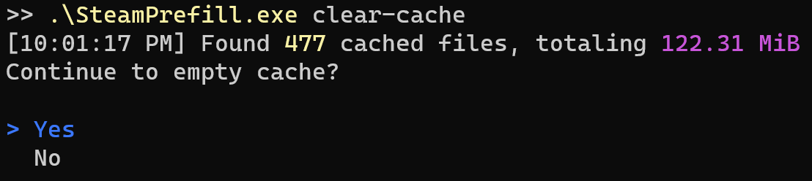

Detailed Command Usage¶
prefill¶
Automatically fills a Lancache with games from Epic Games so that subsequent downloads will be served from the Lancache, improving speeds and reducing load on your internet connection.
Will keep track of which games have been previously downloaded, and will only download games that have updates.
| Option | Values | Default | ||
|---|---|---|---|---|
| --all | Downloads all owned apps, useful for prefilling a completely empty cache. | |||
| --force | -f | By default, EpicPrefill will keep track of the most recently prefilled apps, and will only attempt to prefill if there it determines there a newer version available for download. This default behavior will work best for most use cases, as no time will be wasted re-downloading files that have been previously prefilled. Running with the flag --force will override this behavior, and instead will always run the prefill, re-downloading all files for the selected apps. This flag may be useful for diagnostics, or benchmarking network performance. |
||
| --nocache | EpicPrefill will cache copies of certain files on disk, in order to dramatically speed up future runs. These cache files will be stored in the /Cache directory in the same directory as EpicPrefill. However, in some scenarios this disk cache can potentially take up a non-trivial amount of storage (~1gb), which may not be ideal for all use cases. |
|||
| --verbose | Produces more detailed log output. By default, games that are already up to date will not be displayed at all. Specifying this option will make it so that all games, even ones up to date, will be logged. | |||
| --unit | bits, bytes | bits | Specifies which unit to use to display download speed. | |
| --no-ansi | Application output will be in plain text, rather than using the visually appealing colors and progress bars. Should only be used if terminal does not support Ansi Escape sequences, or when redirecting output to a file. |
clear-cache¶
Deletes temporary cache files stored in the /Cache directory.
These files are cached in order to dramatically speed up future prefill runs (in some cases 3X faster),
however in some cases this disk cache can potentially take up a non-trivial amount of storage (~1gb).

These cache files will also build up over time, as newer versions of games are released, leaving unused cache data behind that will never be used again.
In the case that you would like to save disk space without having to constantly clear the cache,
running prefill with the --nocache flag specified will prevent the cache files from being written in the first place.
| Option | ||
|---|---|---|
| --yes | -y | Skips the prompt asking to clear the cache, and immediately begins clearing the cache. |